Machinery x Humanity is a representation of an early AI system that analyzes text attempting to understand its content. Doing so by using different mechanisms and fixed rules when the system doesn't understant either the meaning or the context of the texts it searches through the internet what these words mean either by definition or images, sometimes making one mistakes. No machine is perfect just like humans. DATA AND AI SYSTEMS PROBLEMS AND THEIR REAL CONSEQUENCES AI systems are extremely integrated into today's society, these systems are auto- mated machinery that follows strict rule settings It has been well recorded howe- vern that even the most well-configured systems sometimes demonstrate biased and prejudiced results, that in theory shouldn't be there, but this isn't always true. THE DEMAND FOR DATA: “In the 1970s, artificial intelligence researchers were mainly exploring what is called an expert systems approach: rule-based programming that aims to reduce the field of possible actions by articulating forms of logical reaso- ning. But it quickly became evident that this approach was fragileand impractical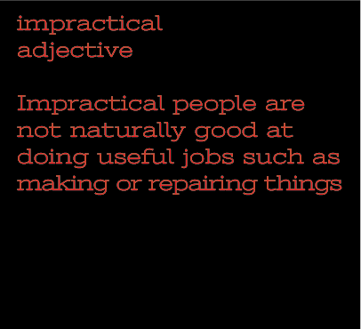 in real-world settings, where a rule set was rarely able to handle uncertainty and complexity. New approaches were needed (...)” DATA IS NOT NEUTRAL: “Data is anything but neutral and cant be neutralized(...)” [1] “They are anything but neutral. They represent personal histories, structural inequities, and all the injustices that have accompa- nied[...]”[2]“The way data is understood, captured, classified, and named is fun- damentally an act of world-making and containment. It has enormous ramifica- tions for the way artificial intelligence works in the world and which commu- nities are most affected. The myth of data collection as a benevolent practice in computer science has obscured its ope- rations of power, protecting those who profit most while avoiding responsibility for its consequences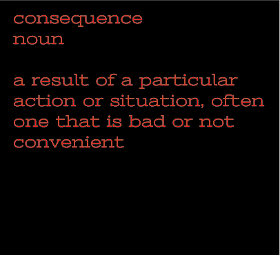.”[2] BIAS IN AI: “Bias means a judgment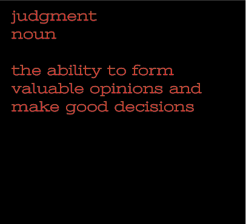 based on preconceived notions or prejudices as opposed to say the impartial evalua- tion of facts” [1] “AI systems are shown to produce discriminatory results along the categories of race, class, gender, disability, or age, companies face considerable pressure to reform their tools or diversify their data” [2] “Discrimination and injustice do not come from outside they are “in there,” because technological defaults are embedded with cultural and social prejudices. [...] Every dataset used to train machine learning systems, whether in the context of supervised or unsupervised machine learning, whether seen to be technically injustice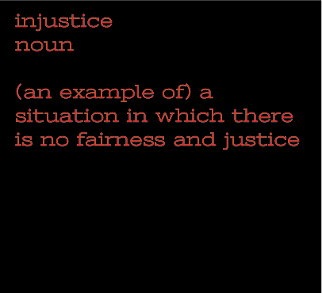 or not, contains a worldview.”[2] CLASSIFICATION IN AI: “(...) a core practice in artificial intelligence. The practices of classi- fication inform how machine intelligence is recognized and produced from univer- sity labs to the tech industry(...)”[2] “While some might respond that this can be easily remedied by creating more categories, this fails to address the deeper harm of allocating people into gender or race categories without their input or consent.''[2] [...] how can we redress the trauma, discrimi- nation, and violence around us not by treating anyone or any event as “repre- sentative”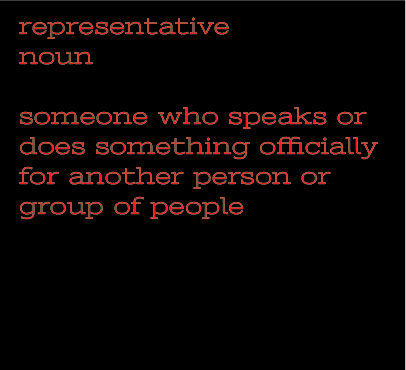 but rather by acknowledging their singularity and our resonating experiences in our responses?” [3] LIMITATIONS OF AI: “The limitations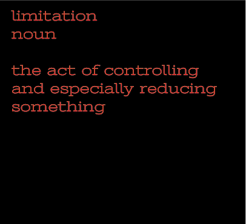 and vulnerabilities of technical control systems make it clear that freedom cannot be reduced to control: freedom makes control necessary, but never enough.” [3] MACHINERY AND DATA- RELATED ISSUES The main issue with machinery-type objects is mainly two: how these machines lack in comparison to humans (be it emotionally or mentally) and how information is treated by them. These are the problems that will possibly never be solved as there are extremely complex problems that involve social political and economical issues but that doesn't mean we should ignore them. MACHINES VS HUMANS: “Not until a machine can write a sonnet or compose a concerto because of thoughts and emotions felt, and not by the chance fall of symbols, could we agree that machine equals brain—that is, not only write it but know that it had written it. No mechanism could feel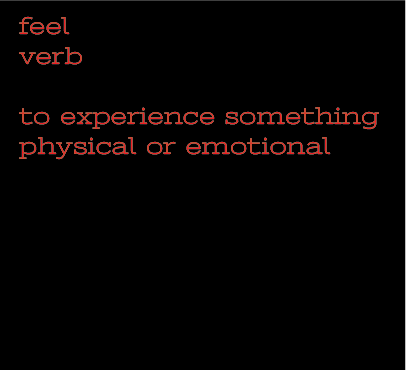 (and not merely artificially signal, an easy contrivance) pleasure at its successes, grief when its valves fuse, be warmed by flattery, be made miserable by its mistakes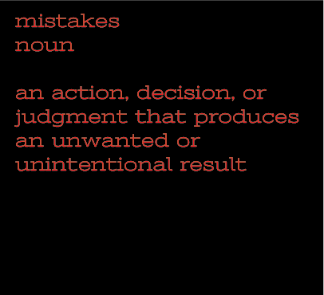, be charmed by sex, be angry or depressed when it cannot get what it [4] POWER AND LIMITATIONS OF MACHINERY: “The idea behind digital computers may be explained by saying that these machines are intended to carry out any operations which could be done by a human computer. The human computer is supposed to be following fixed rules; he has no authority to deviate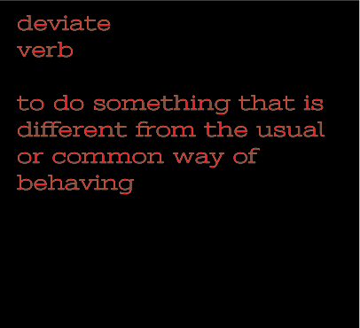 from them in any detail (...)” [4] “There are a number of results of mathema- tical logic which can be used to show that there are limitations to the powers of discrete-state machines.” [4] “In short, then, there might be men cleverer than any given machine, but then again there might be other machines cleverer again, and so on.” [4] THE PROBLEM WITH INFORMATION: “Although it makes sense to speak of false information (for example, in a faulty credit database), the tacit assumption is most commonly that information is true that it corresponds in some transparent way to certain people, places, and things in the world.” [5] DISTORTION OF INFORMATION: “(...) no matter how thoroughly the capture process is controlled, it is impossible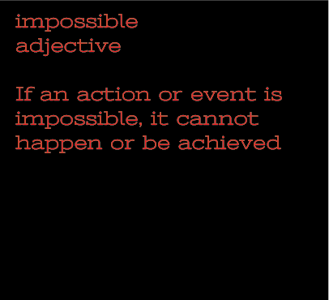, short perhaps of total mechanization of a given form of activity, to remove the ele- ments of interpretation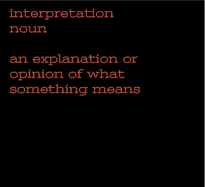, strategy, and ins- titutional dynamics.” [5] “The point, rather, is that capture is never purely technical but always sociotechnical in nature.”[5] RELEASE OF PRIVATE INFORMATION: “In space, perhaps, no one can hear you scream. But in cyberspace, someone—perhaps the richest man on the planet can indeed hear you, whether you scream, cry, or whis- per, even in a “private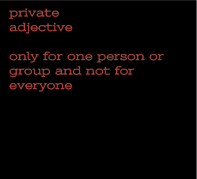” conversation.”[5] 1-Kate Crawford, Nips 2017 The Trouble with Bias2-Kate Crawford, Atlas of Ai 20213-Wendy Hui Kyong Chun, Discriminating Data: correlation, neighborhoods, and the new politics of recognition 20214-Alan Turing, Computing Machinery and Intelligence 19505-Agre, Philip E., Surveillance and Capture: Two Models of Privacy,1994
2-Kate Crawford, Atlas of Ai 2021
3-Wendy Hui Kyong Chun, Discriminating Data: correlation, neighborhoods, and the new politics of recognition 2021
4-Alan Turing, Computing Machinery and Intelligence 1950
5-Agre, Philip E., Surveillance and Capture: Two Models of Privacy,1994